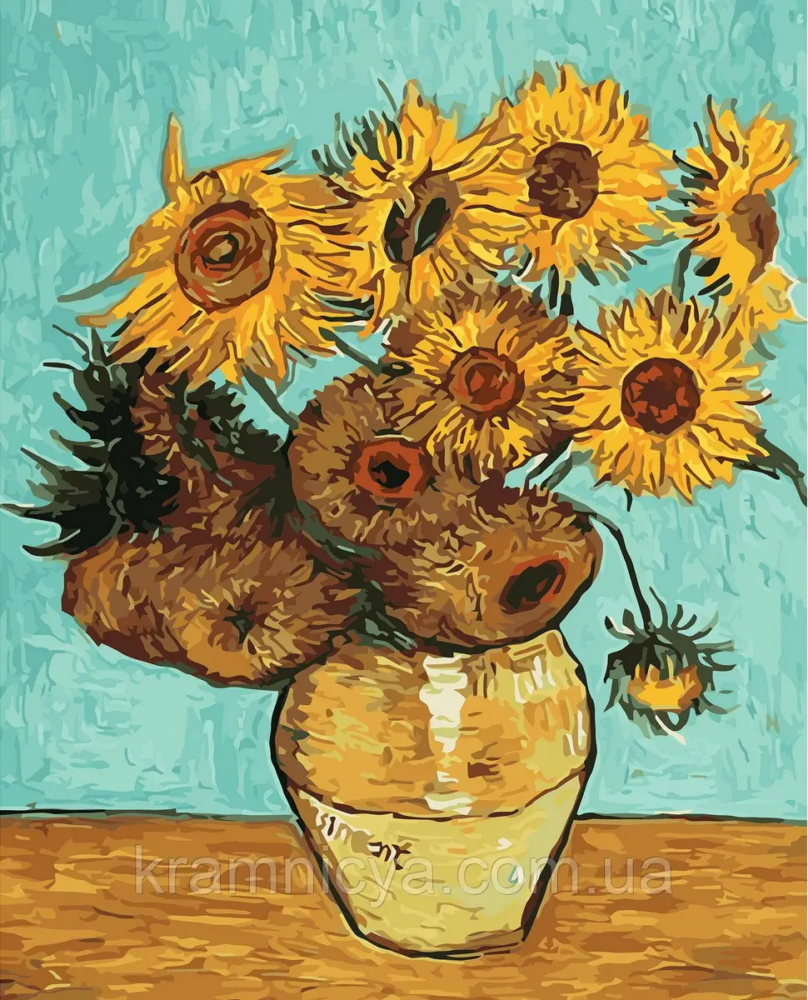

Sunflowers

FACTS
- Sunflowers is comprised of two series of paintings
- It’s very easy to distinguish the two sets from one another. The Arles Sunflowers are posed in vases, poking skyward;
the Paris series presents the flowers lying on the ground.
- The Arles Sunflowers were painted for Paul Gauguin.
- Gauguin was impressed. Gauguin declared Sunflowers “a perfect example of the style that was completely Vincent.”
- Van Gogh loved working on Sunflowers.
- He initially planned to create 12 sunflower paintings in Arles.
- There are only five known Arles Sunflowers today. Between his initial version and their repetitions, by 1889, there were seven Arles Sunflowers. However, over the years, two have been lost to the public.
- The Arles Sunflowers are part of a wider collection of works.
These were created when the artist lived with his brother Theo in the City of Light, ahead of moving to Arles in the south of France in 1888. That August, van Gogh began the Arles Sunflowers while renting four rooms in a yellow house.